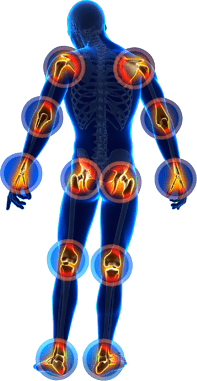
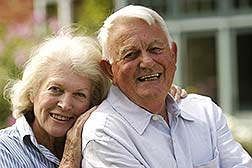

Un jardinero de 66 años descubre que la cúrcuma alivia el dolor de la artritis, pero tiene un efecto secundario que le cambia la vida. Lee su historia...
Un nuevo tratamiento seguro y natural para la artritis y el dolor de las articulaciones se está agotando en todo el país
Si ya tienes asumido que vas a pasarte el resto de tu vida atado a medicamentos con receta que lo único que hacen es aliviar el dolor de la artritis o el dolor en las articulaciones, tienes que leer el testimonio sobre Artefort que acaba de enviarnos Alejandro Serrano desde Málaga.
Escuchamos con demasiada frecuencia que la gente tiene que recurrir a medicamentos con receta para aliviar el dolor en las articulaciones y, al descubrir los efectos secundarios que tienen muchos de ellos, siempre nos echamos las manos a la cabeza. Nos alegra mucho leer historias sobre la cúrcuma como las de Alejandro, porque eso quiere decir que alguien ha podido dejar de tomar medicamentos con receta y reemplazarlos con remedios naturales que la gente ha estado usando durante miles de años.
Cómo consiguió Alejandro dejar de tomar opiáceos
"Mi médica quería quitarme los opiáceos que me
habían recetado hacía más de 10 años y que aún seguía tomando. Tengo artritis
severa en ambas rodillas y otros problemas que hacen imposible que me pongan una
prótesis de rodilla, lo cual me causa un dolor considerable. Entonces me
recomendó que probara la cúrcuma como un analgésico a base de hierbas. Me
encanta la jardinería, así que me hizo mucha ilusión probar un remedio herbal
por primera vez. En la farmacia solo podían ofrecerme una pastilla genérica de
200 mg que estuve probando durante un tiempo. Mi dolor de rodillas se redujo un
poco, pero no demasiado (la verdad es que no lo suficiente como para trabajar en
el jardín sin que me dolieran).
Después de investigar un poco, descubrí que Artefort era
una de las opciones más
recomendadas para este tipo de suplemento de cúrcuma de calidad superior. Empecé
tomando 2 cápsulas al día. En cuatro días comencé a sentir mucha más libertad en
mis articulaciones y me di cuenta de que la inflamación había disminuido
significativamente.
Después de algo más de una semana, noté que mis hombros habían recuperado toda su amplitud de movimiento, mis rodillas y mis tobillos eran capaces de aguantar mi peso durante todo un día de trabajos en el jardín. ¡Pero ahí no acaba la cosa! Antes tenía que llevar siempre una libreta encima donde anotaba cuando regaba cada planta, pero después de llevar 3 semanas tomando cúrcuma, empecé a pensar con mucha más claridad y me di cuenta de que ya no la necesitaba. ¡Ahora mi cerebro funciona mucho mejor! ¡Un superefecto secundario inesperado que me ha hecho la vida mucho más fácil!
Actualización: ¡El jardín de Alejandro vuelve a florecer!
Normalmente después de trabajar en el jardín, las articulaciones se me hinchaban, me notaba los músculos entumecidos y me sentía viejo. Después de tomar Artefort, las articulaciones ya no se me hinchaban tanto después de hacer las mismas actividades.
Estuve aproximadamente dos semanas sin tomar cúrcuma y, ¿sabéis qué? Empecé a escuchar cómo me crujían los huesos, tenía los tobillos hinchados y no podía prestarle a mi jardín la atención que necesitaba (por no hablar de que mi mujer decía que estaba siempre de mal humor).
Entonces, decidí volver a pedir el pack "Compra 3 y consigue 2 gratis" de Artefort y poco después, ¡volví a ser yo! Sin dolores ni molestias, la inflamación ha disminuido... Incluso mi mujer dice que vuelvo a ser el hombre alegre de siempre :) No tengo ninguna duda de que Artefort es la solución definitiva. Si estás pensando en probarlo, no esperes más. Te aseguro que yo también tenía muchas dudas, pero confía en mí: es una de las mejores decisiones que he tomado en mi vida".
Beneficios de usar Artefort
Se llevan registrando tantas ventajas de su uso durante tanto tiempo, que no es
de extrañar que Artefort se haya convertido en
un
nombre muy conocido en la asistencia sanitaria.
Innumerables doctores de todo el mundo recomiendan a sus pacientes tomar
curcumina de cúrcuma a diario. No solo ayuda a aliviar la artritis y el dolor
articular, sino que además tiene muchos otros beneficios sorprendentes.
Se ha probado científicamente que los ingredientes de Artefort...
- Son un potente compuesto antiinflamatorio natural
- Refuerzan las defensas del sistema inmunológico
- Ayudan a regular el sistema digestivo
- Mejoran la movilidad y la flexibilidad
- Conducen a varias mejoras vasculares que disminuyen el riesgo de sufrir una enfermedad cardíaca
- Incrementan dramáticamente la capacidad antioxidante del organismo
- Favorecen la función cognitiva, vinculada a un menor riesgo de enfermedades cerebrales (como, por ejemplo, el Alzheimer)
- Alivian el dolor de los pacientes con artritis
- Ayudan a retrasar el envejecimiento y combatir enfermedades crónicas relacionadas con la edad
ADVERTENCIA: ¡No todos los suplementos de cúrcuma son iguales!
La mayoría de los suplementos de cúrcuma del mercado aseguran CONTENER curcuminoides estandarizados en un 95 %. Y, si bien es cierto que no mienten del todo, ¡lo que sí es seguro es que exageran la verdad!
La razón por la que alguien toma un suplemento de cúrcuma es para obtener el ingrediente clave de la curcumina y, aunque el polvo orgánico de la raíz de la cúrcuma no es malo, no es tan efectivo como el extracto de cúrcuma estandarizado con un 95 % de curcuminoides. Y te explicamos porqué.
El polvo de la raíz de la cúrcuma contiene aproximadamente un 2-3 % de curcuminoides. Recuerda que la curcumina es el ingrediente activo CLAVE que estás buscando tú.
Compáralo con el extracto de cúrcuma estandarizado que contiene un 95 % de curcuminoides. ¡Esta fórmula es casi 19 veces más efectiva! Combínalo con pimienta negra para una mejor absorción, y tendrás un suplemento de cúrcuma mucho más potente que CUALQUIER suplemento orgánico.
Si lo que quieres son RESULTADOS, lo que buscas es Artefort, con 1000 mg de extracto de cúrcuma estandarizado (95 % de curcuminoides) por porción, y asegúrate de que incluya pimienta negra porque si no, ¡tu organismo no asimilará la curcumina!
Conclusión
Si estás buscando el mejor producto del mercado que te ayude a aliviar el dolor
en las articulaciones, aumentar tu flexibilidad en general, además de muchos
otros beneficios increíbles, entonces Artefort
es justo lo que necesitas.
No solo es el producto más vendido del mercado actualmente, sino que además
viene con una garantía de satisfacción del 100 % o te devuelven el
dinero.
Solo por tiempo limitado, Artefort ofrece a nuestros lectores
un 50 % de descuento en los pedidos realizados hoy,
¡además de ENVÍO
GRATIS!

"Tanto mi marido como yo teníamos dudas al principio, pero cuando
empezamos a usar Artefort, ¡nuestros dolores de la
artritis
desaparecieron! Gracias, Artefort, nos has cambiado la vida".
- Judith Gómez

"¡Me sorprendió muchísimo lo bien que empecé a sentirme! No creo que
mis nietos consigan seguirme el ritmo. ¡Es una sensación
maravillosa!"
- Raquel Vázquez
"Funciona DE VERDAD. Empecé a tomarlo en cuanto me levantaba por las
mañanas y me sentía genial el resto del día. ¡Me parece increíble
que funcione tan rápido!"
- Roberto Contreras
Estudios y referencias: